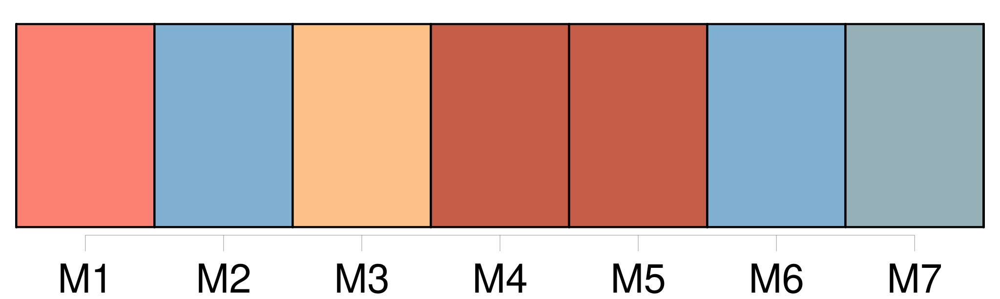
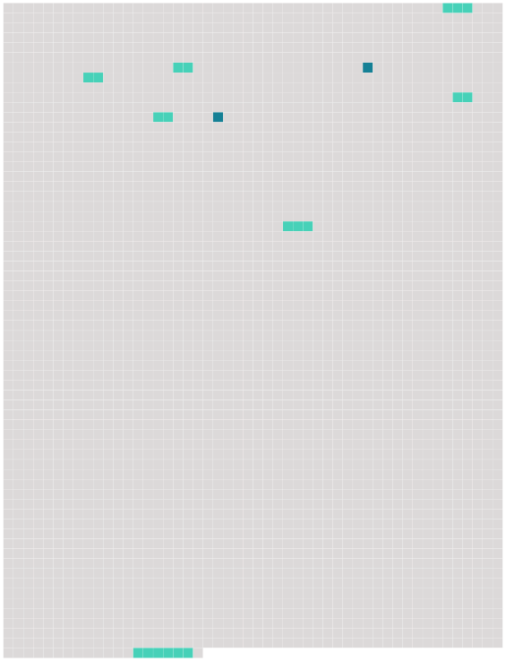

Longueur nb maillons : 9 mentions |
 |
» [9 phrases] Et, puis à quoi peut nous servir [cette découverte] ?? Si nous sommes destinés à périr sur ce rocher désert, nous ne pourrons même pas [la] faire connaître au monde.
» [2 phrases]
» [1 phrases]
Roger, qui avait une imagination romanesque, et paraissait parfois bien extravagante à son placide ami, lui dit tout à coup : [15 phrases] Leur retour fut salué avec des démonstrations de joie par les autres naufragés, qui écoutèrent avec beaucoup d'intérêt le récit de [la découverte merveilleuse] [104 phrases]
» |
 |
Il est possible de télécharger la ressource sur la page Ortolang |
Si vous avez des questions ou vous voyez des erreurs, merci d'envoyer un mail à silvia.federzoni89@gmail.com |